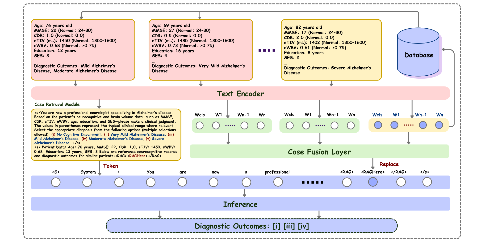

BRAINS: A Retrieval-Augmented System for Alzheimer's Detection and Monitoring
Biomedical Retrieval-Augmented Intelligence for Neurodegeneration Screening
1American International University-Bangladesh 2Multimedia University 3George Mason University 4ELITE Research Lab
†Corresponding authors

<RAGHere> token in the prompt. The fused representation is passed to the LLM for inference and explanation.Abstract
As the global burden of Alzheimer's disease (AD) continues to grow, early and accurate detection has become increasingly critical, especially in regions with limited access to advanced diagnostic tools. We propose BRAINS (Biomedical Retrieval-Augmented Intelligence for Neurodegeneration Screening) to address this challenge. This novel system harnesses the powerful reasoning capabilities of Large Language Models (LLMs) for Alzheimer's detection and monitoring. BRAINS features a dual-module architecture: a cognitive diagnostic module and a case-retrieval module. The Diagnostic Module utilises LLMs fine-tuned on cognitive and neuroimaging datasets, including MMSE, CDR scores, and brain volume metrics, to perform structured assessments of Alzheimer's risk. Meanwhile, the Case Retrieval Module encodes patient profiles into latent representations and retrieves similar cases from a curated knowledge base. These auxiliary cases are fused with the input profile via a Case Fusion Layer to enhance contextual understanding. The combined representation is then processed with clinical prompts for inference. Evaluations on real-world datasets demonstrate BRAINS effectiveness in classifying disease severity and identifying early signs of cognitive decline. This system not only shows strong potential as an assistive tool for scalable, explainable, and early-stage Alzheimer's disease detection, but also offers hope for future applications in the field.
Method
Case Retrieval Module
The patient profile (MMSE, CDR, eTIV, nWBV, age, education, SES) is encoded and matched against a FAISS memory of historical cases by cosine similarity. Candidates are reranked with bge-reranker-large and the top-K = 5 cases form the support set.
Case Fusion Layer
A cross-attention block takes the encoded input case as the query and the retrieved cases as keys and values. Its output is one vector that replaces the <RAGHere> token embedding in the prompt, so five cases fit regardless of the context window. During training, 0 to 4 of the retrieved cases are masked at random.
Diagnostic Module
LLaMA2-13B, pre-trained on a curated Alzheimer's corpus and fine-tuned with LoRA (r = 8, alpha = 32) on structured records, selects one or more outcomes from no cognitive impairment to severe Alzheimer's disease. The retrieved cases are returned as inspectable evidence.
Results
| Model | All Correct | All F1 | Single P | Single R | Single F1 | Double P | Double R | Double F1 | Triple P | Triple R | Triple F1 |
|---|---|---|---|---|---|---|---|---|---|---|---|
| LLaMA2-13B five-shot | 0.335 | 0.339 | 0.000 | 0.000 | 0.000 | 0.299 | 0.719 | 0.423 | 0.421 | 0.980 | 0.591 |
| LLaMA2-13B fine-tuning | 0.600 | 0.538 | 0.657 | 0.728 | 0.692 | 0.468 | 0.474 | 0.471 | 0.643 | 0.281 | 0.391 |
| LLaMA2-13B w/o standard | 0.454 | 0.376 | 0.645 | 0.513 | 0.571 | 0.290 | 0.500 | 0.361 | 0.250 | 0.063 | 0.100 |
| RAG-1 | 0.712 | 0.731 | 0.766 | 0.540 | 0.619 | 0.703 | 0.824 | 0.802 | 0.774 | 0.981 | 0.863 |
| RAG-2 | 0.727 | 0.755 | 0.790 | 0.572 | 0.664 | 0.660 | 0.921 | 0.769 | 0.727 | 0.975 | 0.842 |
| BRAINS (ours) | 0.773 | 0.819 | 0.784 | 0.731 | 0.740 | 0.711 | 0.875 | 0.810 | 0.931 | 0.911 | 0.929 |
Table II of the paper. Single, double and triple denote cases with one, two or three concurrent diagnostic outcomes. P = precision, R = recall.
Data
Fine-tuning and evaluation use 1,105 patient records collected from medical institutions, labelled with five Alzheimer's categories and described by MMSE, CDR, eTIV, nWBV, age, gender, handedness, education and socioeconomic status. Pre-training uses a curated corpus of Alzheimer's literature and structured annotations derived from NACC and ADNI. The clinical records cannot be redistributed; the data card gives the schema, preprocessing and access route, and the repository ships a synthetic cohort generator with the same schema.
Code
The repository holds a reference implementation of the method, reconstructed from the paper: case encoder, FAISS case memory with reranking, Case Fusion Layer, <RAGHere> injection, LoRA fine-tuning with dynamic masking, and the Table II evaluation protocol. It runs end to end on a laptop with a small Hugging Face model.
git clone https://github.com/rajandasguptaml/BRAINS.git && cd BRAINS
pip install -r requirements.txt
python -m brains.synthetic --n 1200 --out data/synthetic/cohort.jsonl
python -m brains.train --config configs/demo_tiny.yaml
python -m brains.evaluate --checkpoint outputs/demo_tiny
python -m brains.predict --checkpoint outputs/demo_tiny --age 76 --mmse 22 --cdr 1.0 --etiv 1450 --nwbv 0.68 --education 12 --ses 3Citation
@inproceedings{dasgupta2025brains,
title = {{BRAINS}: A Retrieval-Augmented System for {Alzheimer}'s Detection and Monitoring},
author = {Das Gupta, Rajan and Morol, Md Kishor and Fahad, Nafiz and Hosain, Md Tanzib and Choya, Sumaya Binte Zilani and Hossen, Md Jakir},
booktitle = {2025 International Conference on Machine Learning and Applications (ICMLA)},
publisher = {IEEE},
year = {2025},
pages = {1473--1478},
doi = {10.1109/ICMLA66185.2025.00224}
}